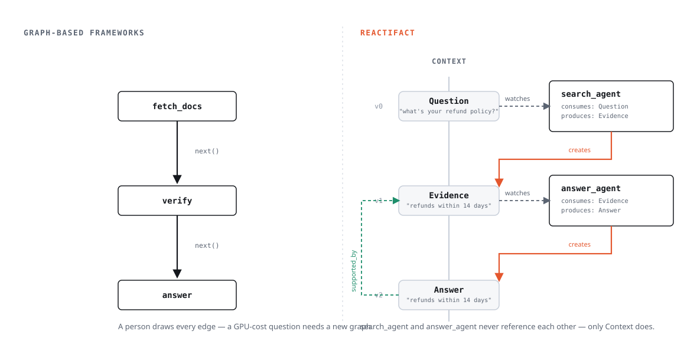

reactifact vs. LangGraph / CrewAI / обычные вызовы функций¶
Это сравнение, а не питч. reactifact ещё до 1.0 (0.5.0), у него один
мейнтейнер, и нет ни хостинг-платформы, ни SaaS для трейсинга, ни маркетплейса
готовых агентов. Если вам нужно именно это — честный ответ: берите LangGraph
или CrewAI, они зрелые и хорошо поддерживаются. Дальше — если сравнение ниже
всё равно склоняет в другую сторону.

Коротко¶
| LangGraph | CrewAI | reactifact | |
|---|---|---|---|
| Основная абстракция | явный граф состояний (узлы + рёбра) | команда агентов с ролями | типизированные артефакты + реактивные агенты |
| Управление потоком | рисуете сами | в основном фиксировано (последовательно/иерархически) | выводится из изменений состояния |
| Состояние | общий слабо типизированный dict/TypedDict |
результаты задач передаются дальше | версионированные, типизированные, неизменяемые-по-версии артефакты |
| «Почему агент так ответил?» | нужно вручную разбирать логи/чекпоинты | не отслеживается по умолчанию | граф провенанса (supported_by/derived_from/…) встроен |
| Числа/вычисления | считает LLM, если вы не написали tool | то же самое | recipes выносят вычисления в детерминированный код, а не в модель |
| Откат / ветвление | checkpointer + ручная логика replay | не встроено | context.branch(), three-way merge(), детерминированный replay |
| Зрелость / экосистема | высокая — широко используется в проде | высокая — большое сообщество | до 1.0, один мейнтейнер, маленький набор примеров |
| Managed-хостинг | LangGraph Platform | CrewAI Enterprise | нет |
| MCP | через адаптеры LangChain | через адаптеры CrewAI | клиент + сервер встроены (reactifact.mcp, extra mcp) |
Где reactifact — не тот выбор¶
Честно сказать об этом важнее, чем таблица фич выше:
- У вас реально фиксированный пайплайн. Если шаги всегда A → B → C без ветвления по данным, граф-фреймворк (или просто функция) — меньше церемоний, чем моделирование артефактов и consumes/produces.
- Нужна managed-платформа прямо сейчас — хостинг выполнения, UI для не-инженеров, энтерпрайз-поддержка по контракту. reactifact — библиотека, за ней нет SaaS.
- Нужна большая экосистема готовых агентов/инструментов. У LangGraph и
CrewAI больше сторонних интеграций, больше ответов на Stack Overflow,
больше боевого опыта в проде.
Sourceв reactifact намеренно маленький (filesystem, CSV, embeddings, web) — остальное пишете сами.reactifact.mcp(доки) даёт доступ к любому MCP-серверу как кTool— это сужает разрыв именно для вызова инструментов, но не касается интеграцийSource/retrieval. - Команда уже глубоко инвестировала в LangGraph. Переписывать рабочую систему ради архитектурной чистоты почти никогда не окупается. reactifact лучше подходит для нового агента, а не как цель миграции старого.
Где разница реально важна¶
1. Модель состояния: dict vs типизированные версионированные артефакты¶
Состояние в LangGraph — общий dict (или TypedDict), который может читать и
менять любой узел. Это гибко, но «какая форма у состояния прямо сейчас» —
факт времени выполнения, а не то, что проверит тайпчекер, а «кто последним
трогал это поле» не отслеживается, если вы сами это не добавили.
Артефакты reactifact — pydantic-модели. У каждого есть тип, id, версия и
created_at. Ничего не удаляется-и-перезаписывается на месте — Update
создаёт новую версию, поэтому context.diff(v1, v2) — реальная,
инспектируемая операция, а не то, что приходится реконструировать по логам.
2. Поток управления: нарисованный граф vs реактивная диспетчеризация¶
Граф LangGraph — это и есть оркестрация: вы пишете add_edge,
add_conditional_edges, вручную решаете, какой узел может идти за каким. Это
правильная модель, когда путь реально один. Она перестаёт быть правильной,
как только путей становится много — реальный вопрос агенту знаний («почему
инфра-расходы выросли в Q2?») может требовать и Confluence, и GitLab, и
вычисление по CSV, и подтверждение человеком, а следующий вопрос потребует
другое подмножество. Кодировать каждую комбинацию рёбрами графа превращается
в комбинаторную задачу проводки.
Агенты reactifact объявляют consumes/produces — какие типы артефактов
вызывают реакцию и что агент может создать. Runtime выводит выполнение из
того, какие артефакты реально существуют, а не из заранее объявленного
пути. Два агента, никогда не знавшие друг о друге, корректно складываются в
цепочку, если один производит то, что потребляет другой. Поэтому же нет
картинки узлов-и-рёбер (viz.blueprint()), которую нужно вручную
синхронизировать — подробнее в Why reactifact.
3. Провенанс: пристройка сбоку vs встроенное¶
«Почему агент так ответил?» в LangGraph/CrewAI обычно означает чтение логов, истории сообщений или самодельного трейса. Нет первоклассного понятия «этот Answer выведен из этого Evidence, который извлечён из этого Doc».
В reactifact effects.create(...).link("supported_by", evidence) — обычная
часть написания produce, и получившийся граф можно запросить:
context.related(answer.id, "supported_by") или отрендерить в Mermaid через
context_to_mermaid(). Это не логирование сбоку — тот же механизм runtime
использует, чтобы решить, что перезапустить после отката.
4. Детерминизм: модель считает vs модель рассуждает¶
Попросите LLM посчитать sum(gpu_cost) / sum(total_cost) прямо внутри ответа
— и она уверенно выдаст число, которое иногда неверно. Это не проблема
промпта, это то, как работает генерация токен за токеном для арифметики. И
LangGraph, и CrewAI оставляют это полностью на вас (напишите tool, не
забудьте его вызвать, не забудьте доверять его результату больше, чем модели).
Архитектурное смещение reactifact (не жёсткое правило) — Produce, делающий
арифметику над структурированными данными (CSV, результат запроса), должен
считать в обычном Python и отдавать LLM уже результат для объяснения, а не
сырые числа для угадывания. Пример knowledge делает именно
так: LLM пишет текст, calc.py считает.
5. Откат и ветвление: checkpointer vs git-подобный context¶
У LangGraph есть checkpointer'ы для персистентности и путешествия по истории
чекпоинтов. Context в reactifact версионирован буквальнее: можно сделать
context.branch(), чтобы форкнуть параллельное исследование, прогнать разные
агенты на каждом форке и слить их через three-way merge() — см.
Ветвление и пример forklab, где две стратегии выполняются
каждая на своём форке и результат сливается.
Если сравниваете сами¶
Разумный тест: возьмите из вашего проекта на LangGraph/CrewAI одного агента с нетривиальным ветвлением (не фиксированный 3-шаговый пайплайн) и перенесите именно его на reactifact. Если модель артефактов и реактивная диспетчеризация делают логику этого агента короче и честнее в отношении ошибок (никаких тихо выдуманных чисел, реальное «почему» для ответа) — остальную систему, вероятно, тоже стоит переносить. Если это в основном добавляет церемоний для реально линейного потока — этот агент никогда не был тем тяжёлым по графу случаем, для которого сделан reactifact.
Начинаете с нуля (переносить нечего)¶
Тест выше предполагает существующий граф для сравнения. Если его нет, эквивалентная проверка не требует готового проекта — ей нужна третья вещь, подключаемая задним числом:
- Возьмите вопрос, который реально требует объединения двух независимых вещей (число из CSV и поиск по документу, скажем — не фиксированный пайплайн A→B).
- Напишите это как два
Produce, каждый из которых заявляет только то, что онconsume/produce— сниппет из двух агентов на главной странице доков (find_evidence/ответ) даёт форму. Ни один не должен импортировать или ссылаться на другой по имени. - Теперь добавьте третьего агента для follow-up вопроса, которому нужно другое подмножество тех же данных — не трогая код первых двух агентов.
Если шаг 3 компонуется без трения — это и есть реальное утверждение этой страницы, не маркетинговая строчка — откройте discussion с тем, что вы построили (или где именно не скомпоновалось так, как здесь заявлено); это быстрее, чем читать ещё доки, и ровно тот отчёт, который делает это сравнение честнее со временем.